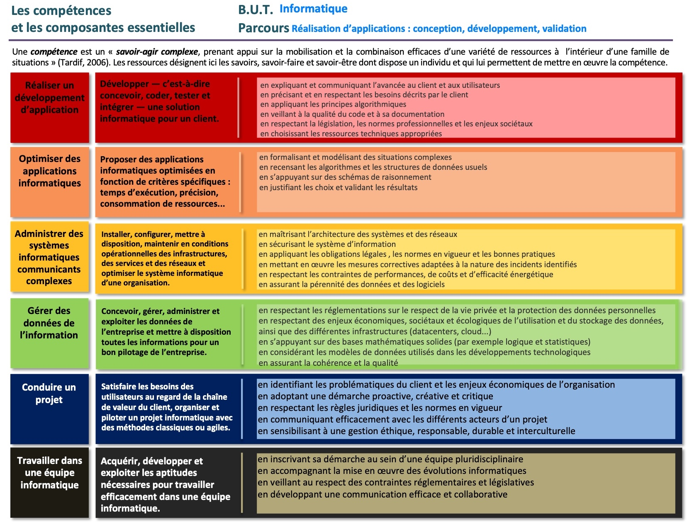

BUT Informatique
Organisation du BUT
Répartie sur 3 années, la formation représente 1800 heures encadrées, auxquelles s'ajoutent 600 heures de projets tutorés et à minima 22 à 26 semaines de stage et/ou d'alternance.
L'alternance peut être envisagée dès la 2ème année du BUT. Lors des 2ème et 3ème année, l'alternance ou un stage est obligatoire.
Les parcours proposés
Les deux parcours suivants sont proposés au Département d'Informatique de l'IUT site d'Aix-en-Provence :
- Réalisation d'applications : conception, développement, validation
- Déploiement d'applications communicantes et sécurisées
Ces deux parcours requièrent des savoir-être et des savoir-faire, tant académiques que professionnels, organisés autour du développement des six grandes compétences qui caractérisent le B.U.T. Informatique :
- Réaliser un développement d'application
- Optimiser des solutions informatiques
- Administrer des systèmes informatiques communicants complexes
- Gérer des données de l'information
- Conduire un projet
- Travailler dans une équipe informatique
En particulier, le premier parcours repose sur une consolidation de la compétence "Optimiser des solutions informatiques", alors que le second parcours s'appuie sur un renforcement de la compétence "Administrer des systèmes informatiques communicants complexes".
Vous retrouverez sur le visual suivant les explications plus complètes des compétences citées précédemment :

Fiche globale du BUT Informatique
Toutes les informations essentielles à connaître à propos de la formation proposée dans notre Département Informatique sont rassemblées dans le document PDF ci-dessous :